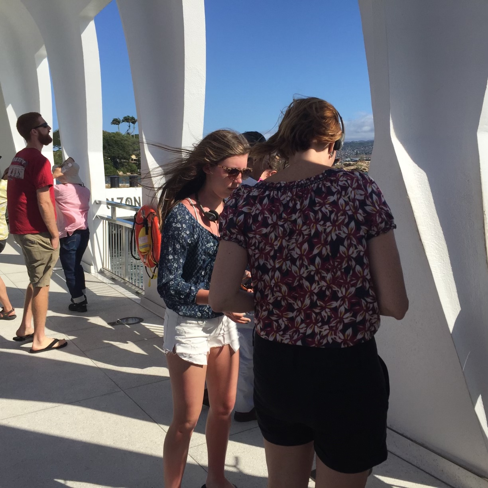
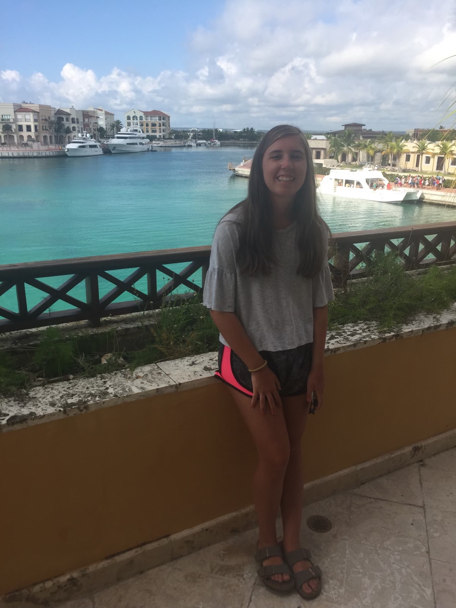

In 2015, My family travelled to Hawaii. We stayed in Honolulu and Maui. In Honolulu, we visited the Pearl Harbor Memorial, walked the downtown area of Honolulu, and enjoyed the beaches. In Maui, we went on a snuba boat tour and swam in the ocean.

In 2016 and 2017, My family and I spent spring break in Punta Cana, Dominican Republic. We were able to try a lot of different food and enjoy time by the beach. We did not go on any specific excursions outside of the town we stayed in, however, it was a nice trip.
